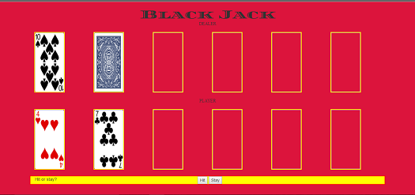

Overview
I've found writing simple computer games to be an extremely effective way to practice applying programming concepts. I decided to combine a few of the games I've written into 'Arcade', which is a simple Express web application that serves four arcade-style single page applications: Asteroids, Battleship, Black Jack, and Turtle Graphics. These SPAs were originally independent side projects that I worked on for varying amounts of time at different stages in my studies. They all posed unique technical challenges. Music courtesy of Vector Hold and Le Matos.
Asteroids
A game state object tracks the movements of asteroids, lasers, and the player using a two dimensional array. The game state's render function is called whenever any change is made to the array and simply recomputes the appropriate CSS properties. Movement is handled using numerous setInterval function calls. One setInterval call sets up the point scoring, another initiates the constant generation of asteroids, one manages the laser charging, and a fourth manages the laser as it advances.
I added a leveling up dynamic to the game whereby the speed of asteroid generation (but also point generation) increases by 50% every 5000 points. This makes gameplay much more challenging as time goes on. My biggest implementation challenge was keeping track of all the setInterval calls. The game state's render function is being called quite frequently, which made the game difficult to debug.
Battleship
This game originated as an in-class project at LEARN Academy. The original specification was to randomly generate ships in a single grid, and then give the player 20 shots at finding them all. I quickly decided that this was much less interesting to program than real battleship gameplay, where two players take shots until one fleet is destroyed. On my own I began experimenting with having two grids, one for the player to shoot at and one for the computer opponent. Orignally the computer picked cells at random. I added a self-placement feature that made heavy use of jQuery to immediately show the player whether or not a ship placement was valid or not.
Finally I moved on to gradually improving the computer opponent's targeting algorithm. This was accomplished through the use of a 'seeker' object that stored data related to the computer's most recent hits and then systematically searched nearby squares until the recently hit ship was sunk. The logic in the seeker object turned out to be the most complex code that I had written up to that point, which was unexpected because from a human perspective good battleship strategy is quite obvious and intuitive. The process of formalizing an intuitive strategy into precise rules was demanding, but now the computer is a competent opponent.
Black Jack
In the fall of 2016 I wrote a command line version of black jack for UCSD Extension's Java II course. Once I began practicing web development a few months later I decided to translate the original Java program into Javascript so that I could display it in the web browser. This is one of the my first Javascript programs. It makes use of jQuery to toggle the visibility of buttons on and off.
Turtle Graphics
I wrote this implementation of turtle graphics because I wanted to get more comfortable with two dimensional arrays. The user moves a relative cursor (a turtle) upon a Cartesian plane by inputting sequences of numbered commands. Any drawable shape can be represented by a similar sequence of precise commands.
The most significant challenge of writing this program was developing a function to compute whether or not a proposed sequence of moves would place the turtle out of bounds.